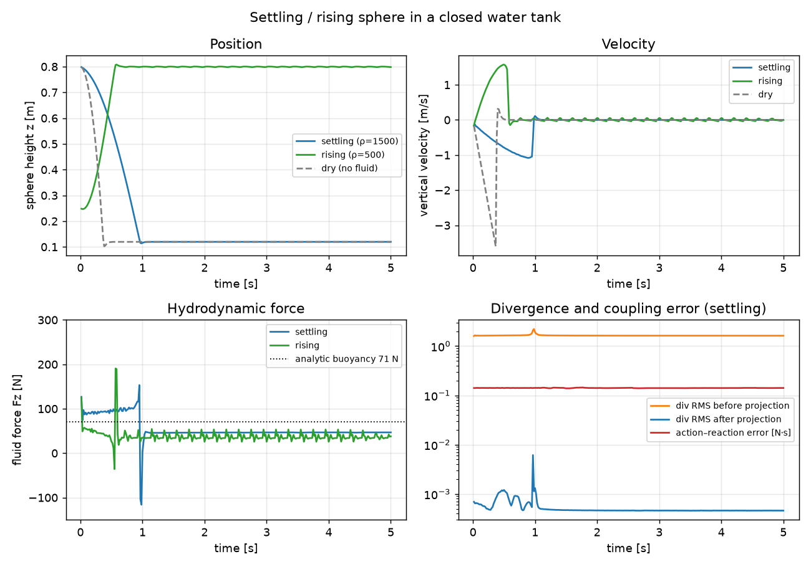
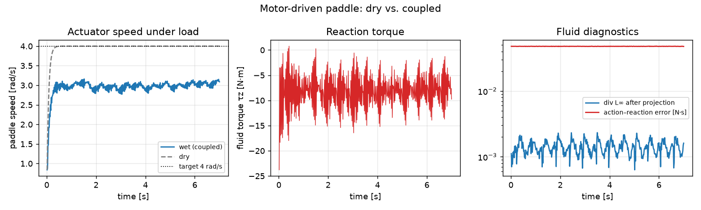
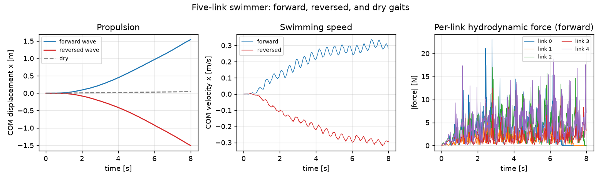
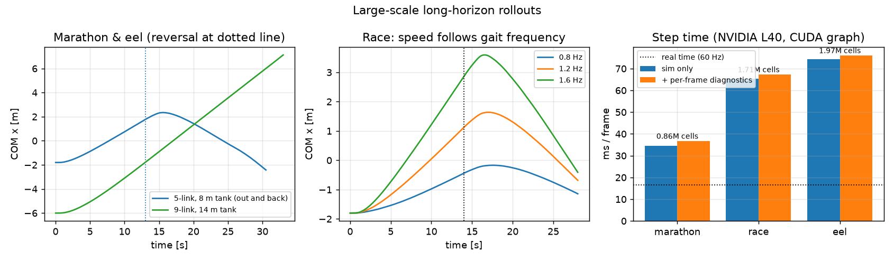
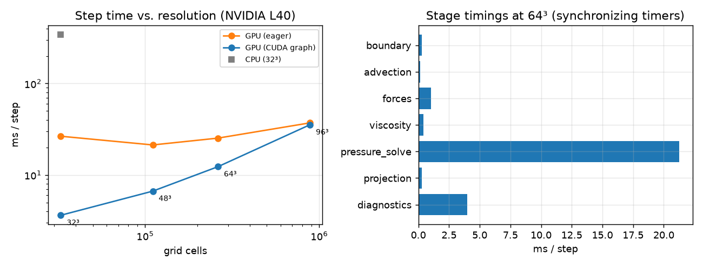

SolverMACFluid: Two-Way Coupled Incompressible Fluid for Newton
A 3D incompressible Newtonian fluid solver on a dense staggered MAC grid, built for two-way coupling with articulated rigid-body solvers through Newton's experimental coupled-solver framework. MuJoCo owns the bodies, joints, and actuators; the fluid solver treats them as moving immersed boundaries and feeds hydrodynamic wrenches back — buoyancy, drag, reaction torque, and swimming propulsion all emerge from the coupling.
Eric Heiden · 2026-07-15 · branch eric-heiden/mac-fluid-solver of
eric-heiden/newton · NVIDIA L40, Warp 1.15.0.dev
Feature overview
| Implemented and tested | Out of scope / future work |
|---|---|
|
|
MAC grid layout
The fluid occupies a closed axis-aligned box of uniform cells. Pressure (and cell labels: fluid / static solid / rigid-body index) is stored at cell centers; the x, y, z velocity components are stored on the corresponding cell faces. The staggering makes the discrete divergence and pressure gradient adjoint, so the projection removes divergence without checkerboard modes. Rigid bodies are voxelized each step by sampling the union signed-distance field of their collision shapes; every face adjacent to a solid cell is constrained to the rigid-body velocity at that face position.
Architecture: coupling with MuJoCo
newton.Model; per-entry ModelViews scope each solver to what it owns. The fluid never integrates rigid state.Pose transfer and wrench feedback
Each coupled step, SolverCoupledProxy runs one or more coupling passes:
- MuJoCo steps the articulation (substepped), including last pass's fluid wrenches as external body forces.
- The coupler syncs the resulting body poses
body_qand spatial velocitiesbody_qdonto the proxy bodies in the fluid's model view. - The fluid rasterizes the proxies into its grid, advects, applies forces and viscosity, enforces the boundary velocities, and projects pressure.
coupling_harvest_proxy_wrenchesconverts the fluid's accumulated per-body boundary impulses to wrenches (impulse/dt) — solver-native collection, not rigid-momentum differencing.- On multi-pass steps, the coupler redistributes the beginning-of-step state; the fluid restores its checkpointed velocity grid (
iteration_restart), so coupling iterations never advance the fluid extra physical time (verified bit-exact).
The per-body wrench is assembled from two discrete momentum exchanges that are applied equal-and-opposite to the fluid interior: the pressure surface impulse ρ·q·A·n on every fluid/solid interface face (buoyancy, form drag, added-mass reaction), and the viscous exchange impulse where the diffusion stencil couples fluid faces to constrained faces (skin friction). Discrete action–reaction therefore holds to float32 roundoff: measured max error 2.7e-05 N·s against boundary impulses of 82.2 N·s (relative 3.2e-07).
Validation
| Test | Metric | Result |
|---|---|---|
| MAC interpolation | trilinear reproduction of a linear velocity field | exact to 1e-5 (float32) |
| Pressure projection | RMS divergence of a random field, before → after | 21.3 → 2.0e-05 s⁻¹ (1.1e+06×) |
| Closed-domain null space | hydrostatic tank: max residual velocity; ∂p/∂z vs ρg | 1.1e-06 m/s; gradient error 2.0e-07 |
| Viscosity | diffusion operator vs 7-point reference; sinusoid decay rate | matches to 1e-6 |
| Momentum balance | fluid ΔP vs external + boundary impulses | 3.2e-07 relative |
| Coupled-iteration restore | repeat of the same interval after iteration_restart |
bit-exact (deterministic reductions) |
| CPU / CUDA consistency | max velocity-field difference after 3 steps | 8.9e-07 m/s |
| CUDA graph capture | capture one step, replay 5× | passes (finite fields, buoyancy preserved) |
Buoyancy convergence (stationary sphere, r = 0.2 m)
In discrete hydrostatic equilibrium the pressure surface force on the voxelized body is compared to the analytic Archimedes force ρ V g. The error is dominated by the O(dx) binary voxelization and converges first order:
| Grid | Measured Fz [N] | Voxel-volume ρVg [N] | Analytic ρVg [N] | Error vs analytic |
|---|---|---|---|---|
| 16³ | 402.4 | 325.7 | 328.7 | +22.4% |
| 24³ | 394.6 | 340.6 | 328.7 | +20.0% |
| 32³ | 362.8 | 325.7 | 328.7 | +10.4% |
| 48³ | 348.8 | 323.6 | 328.7 | +6.1% |
Example 1 — Settling and rising sphere
A sphere (r = 0.12 m) in a 1 m³ sealed water tank. At ρ = 1500 kg/m³ it settles: it accelerates, approaches terminal velocity (peak 1.08 m/s), and lands on the tank floor, where the steady fluid force is 47 N (a floor-seated sphere carries less than the free-buoyancy 71 N since no fluid pushes from below). At ρ = 500 kg/m³ it rises and comes to rest against a rigid lid at z = 0.80 m, with the fluid supporting its weight. The dry (no fluid) run free-falls.
Settling sphere (ρ = 1500). The slice shows velocity magnitude; red = fast.
Rising sphere (ρ = 500) coming to rest under the lid.

Sphere height, velocity, hydrodynamic force, and fluid diagnostics. The divergence drops ~3 orders of magnitude through each projection. The action–reaction error (0.14 N·s) is float32 reduction noise relative to the ~1 N·s gross hydrostatic boundary impulse exchanged per step (relative 0e+00).
Example 2 — Motor-driven paddle
A dense two-blade paddle (0.64 × 0.05 × 0.2 m) on a revolute joint with a MuJoCo velocity servo (target 4 rad/s, gain 8 N·m·s). Dry, the servo reaches 4.00 rad/s. Coupled, the fluid reaction torque (mean -7.6 N·m) loads the motor down to 3.04 rad/s — a 24% speed reduction under fluid load — while the blade sheds a rotating wake.
Coupled paddle stirring the tank (horizontal velocity slice at blade height).

Actuator speed dry vs. wet, reaction torque, and fluid diagnostics.
Example 3 — Articulated underwater swimmer
A five-link swimmer driven by sinusoidal joint-position targets with a phase lag per joint (traveling wave). Gravity is off, so all net motion must come from fluid interaction. Over 8 s the forward wave produces +1.54 m of travel (cruise ≈ 0.29 m/s), the reversed wave -1.51 m — the swimming direction follows the wave direction — while the dry run drifts only +0.04 m (rigid-solver numerical drift, ~36× smaller than the propulsion). The tank walls are fluid boundaries only: near the end of the run the head links pass out of the fluid domain, where their hydrodynamic force is exactly zero and they coast at constant momentum (gravity is off) while the still-submerged links keep thrusting.
Forward gait: the traveling wave sheds a coherent wake and drives the swimmer forward.
Reversed wave: the same articulation swims the other way.

COM displacement for forward / reversed / dry gaits, swimming speed, and per-link hydrodynamic force magnitudes.
Large-scale long-horizon rollouts
The swimmer example scales to larger tanks, more links, and several swimmers sharing one fluid
domain, and supports a smooth mid-run reversal of the traveling wave (--reverse-at)
so the swimmers turn around instead of leaving the fluid (the reversal dips the gait amplitude
to zero and flips the wave at the quiet point — cross-blending the two waves would pass through
a standing-wave regime that loads all joints simultaneously and can destabilize weak coupling).
The rollouts below run 28–33 simulated seconds under one CUDA graph per frame; the videos play
in real time.
Out-and-back marathon — 5-link swimmer, 8 m tank (0.86M cells, 30 s)
The swimmer cruises 4.1 m down the tank, reverses its gait wave at t = 13 s, turns around, and swims 4.8 m back — 8.9 m of total travel powered purely by fluid interaction.
35 s out-and-back rollout. The dotted line in the trajectory plot below marks the wave reversal.
Three-swimmer race — shared fluid domain (1.71M cells, 28 s)
Three identical swimmers with different gait frequencies race out and back in one 8 × 2.4 m tank (three articulations, 15 bodies, one fluid). Swimming speed follows gait frequency: 0.8 Hz → +1.6 m, 1.2 Hz → +3.4 m, 1.6 Hz → +5.4 m at the turn.
Nine-link eel — 14 m tank (1.97M cells, 33 s)
A 1.7 m nine-link eel cruises 13.1 m one way down the largest tank (1.97M cells): more links carry the traveling wave more smoothly, and even at a gentler 0.7 Hz gait it is the fastest swimmer here.

Large-rollout performance (NVIDIA L40, 160 pressure iterations, CUDA graph)
| Rollout | Fluid cells | Bodies | Duration | sim-only ms/frame | + diagnostics readback | × real time (60 Hz) |
|---|---|---|---|---|---|---|
| Marathon (5 links, 8×2×0.6 m tank) | 857,472 | 5 | 30 s | 34.6 | 36.8 | 0.48× |
| Race (3×5 links, 8×3.2×0.6 m tank) | 1,714,944 | 15 | 28 s | 65.3 | 67.3 | 0.26× |
| Eel (9 links, 14×1.6×0.8 m tank) | 1,966,272 | 9 | 33 s | 74.2 | 76.1 | 0.22× |
"sim-only" launches the captured coupled frame graph (MuJoCo substeps + fluid); "+ diagnostics" adds the per-frame host readback of wrenches and fluid diagnostics used for the metrics logs. Rendering and video encoding are excluded.
Performance
Cubic tank with one rigid sphere, 120 pressure CG iterations per step, viscosity on, full diagnostics on. The pressure solve dominates; at small grids the step is launch-overhead-bound, so CUDA graph capture gives up to 7× (the whole coupled step, including MuJoCo, is captured in the examples).
| Grid | Cells | Device | Mode | ms / step | steps / s |
|---|---|---|---|---|---|
| 32³ | 32,768 | NVIDIA L40 | eager | 26.5 | 38 |
| 32³ | 32,768 | NVIDIA L40 | CUDA graph | 3.6 | 276 |
| 48³ | 110,592 | NVIDIA L40 | eager | 21.3 | 47 |
| 48³ | 110,592 | NVIDIA L40 | CUDA graph | 6.7 | 150 |
| 64³ | 262,144 | NVIDIA L40 | eager | 25.3 | 40 |
| 64³ | 262,144 | NVIDIA L40 | CUDA graph | 12.3 | 81 |
| 96³ | 884,736 | NVIDIA L40 | eager | 37.1 | 27 |
| 96³ | 884,736 | NVIDIA L40 | CUDA graph | 35.4 | 28 |
| 32³ | 32,768 | CPU (single core) | CPU | 342.3 | 3 |

| Stage (64³, eager) | ms / step |
|---|---|
| pressure_solve | 21.27 |
| diagnostics | 3.98 |
| forces | 1.03 |
| viscosity | 0.42 |
| projection | 0.29 |
| boundary | 0.27 |
| advection | 0.17 |
API example
import newton
from newton.solvers import SolverMACFluid, SolverMuJoCo
from newton.solvers.experimental.coupled import SolverCoupledProxy
fluid_cfg = SolverMACFluid.Config(
resolution=(48, 48, 48), cell_size=1.0 / 48.0, origin=(-0.5, -0.5, 0.0),
density=1000.0, kinematic_viscosity=1.0e-4, pressure_iterations=120,
)
solver = SolverCoupledProxy(
model=model,
entries=[
SolverCoupledProxy.Entry(name="mjc", solver=lambda v: SolverMuJoCo(model=v),
bodies=rigid_bodies, joints=joints, substeps=4),
SolverCoupledProxy.Entry(name="fluid", solver=lambda v: SolverMACFluid(v, fluid_cfg),
in_place=True),
],
coupling=SolverCoupledProxy.Config(
proxies=[SolverCoupledProxy.Proxy(source="mjc", destination="fluid",
bodies=rigid_bodies, mode="staggered",
collision_pipeline=lambda m: None)],
iterations=1,
),
)
solver.step(state, state, control, contacts, dt) # one coupled frame
fluid = solver.solver("fluid")
print(fluid.read_diagnostics()["body_wrench"]) # hydrodynamic wrench per bodyKnown limitations and next steps
- Binary voxelized boundaries resolve forces to O(dx) (buoyancy +22% at 16³ → +6% at 48³). Cut-cell face fractions (Batty et al.) would make forces second-order and no-slip sharper.
- Weak coupling stability requires body inertia ≳ hydrodynamic added inertia. Light thin plates need denser bodies, Aitken relaxation, or a future strongly-coupled (monolithic added-mass) solve.
- Sealed domains only: a body breaching the domain boundary violates incompressibility (the compatibility projection spreads the error as pressure spikes). Free surfaces would require a liquid/air interface model.
- Explicit viscosity limits ν·dt/dx² ≤ 1/6; an implicit viscous solve can reuse the CG infrastructure.
- Pressure solve dominates (68% of the step at 64³); a geometric multigrid preconditioner is the natural next optimization.
- The residual hydrostatic solver noise (~3e-4 m/s per step at the CG tolerance floor) causes a slow random-walk velocity accumulation in long quiescent runs; tighter tolerance or a warm start removes it.
- Disconnected fluid regions share a single null-space correction; per-component handling is future work.
Deliverables
- Solver:
newton/_src/solvers/mac_fluid/(grid, boundary rasterization, kernels, pressure solver, solver + coupling hooks), exported asnewton.solvers.SolverMACFluid. - Tests:
newton/tests/test_solver_mac_fluid.py— 14 test functions × CPU/CUDA, all passing; plus 3 example smoke tests. - Examples:
macfluid_settling_sphere,macfluid_paddle,macfluid_swimmerundernewton/examples/multiphysics/. - Docs:
docs/solvers/mac_fluid.rst+ solver-index integration. - This report with raw metrics under
data/and generation scripts underscripts/.